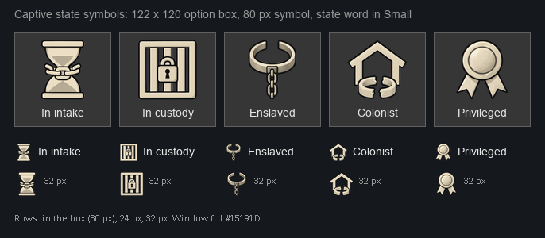
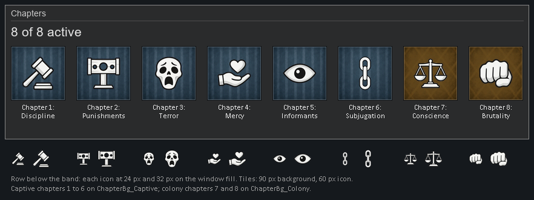
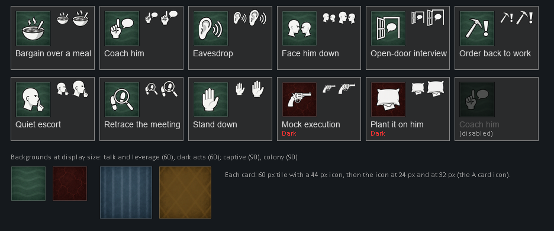
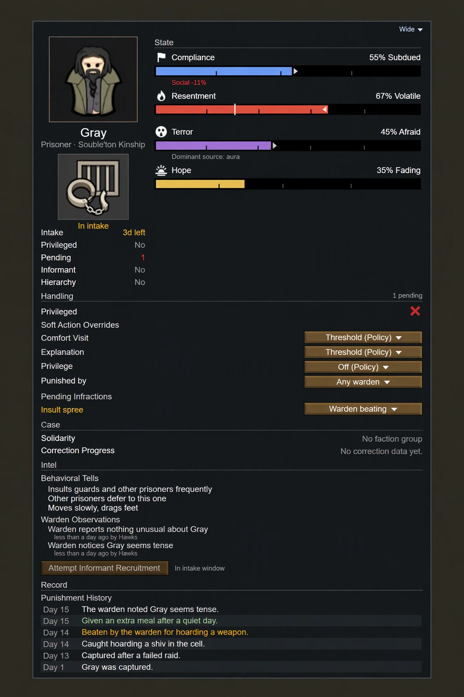
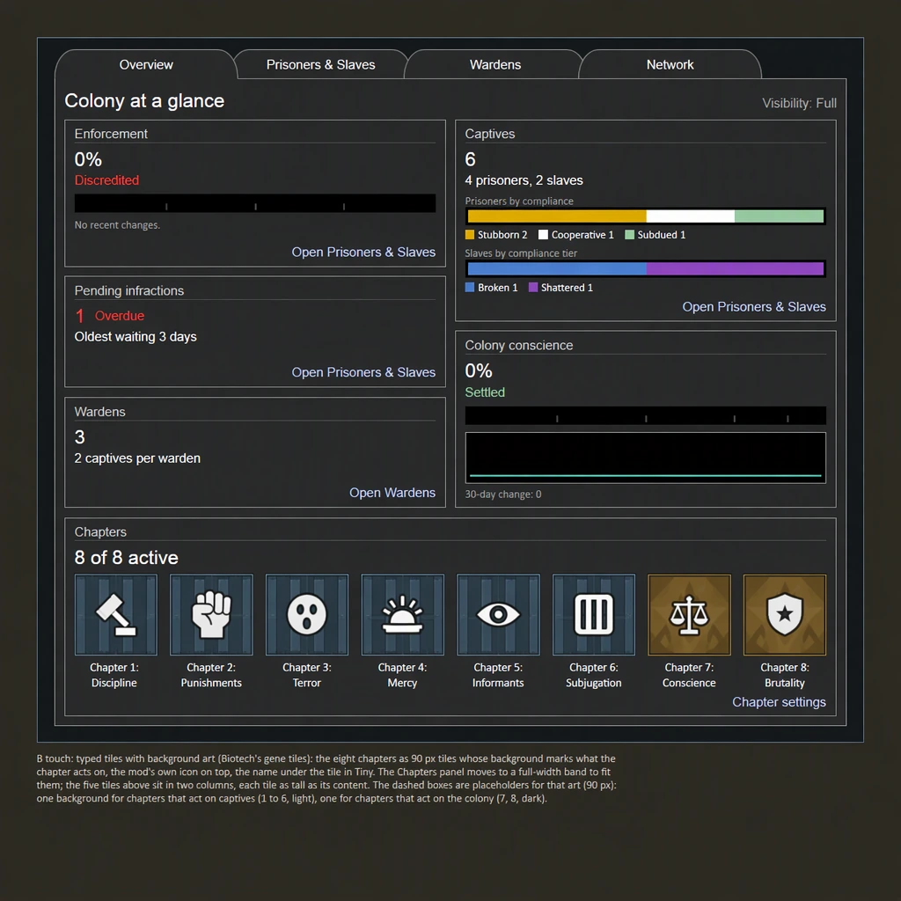

Pain Matters: the native look's art
28 pictures for the screens you picked B on, painted on your own image deployment (9 calls of the 40 you allowed). Each sheet shows the art at the size the game draws it and at 24 px. Tap a sheet to open it at double size, then pinch to zoom.
An image reader checked every picture twice: no fringes, halos, text or glow. Its remaining notes are under each sheet. Nothing is in the game yet; the screens wire the art in when they are built.
Captive state symbols (Conduct pane)
Five symbols, one per state you chose: intake, in custody, enslaved, colonist, privileged. Each sits in a vanilla option box under the captive's portrait, at 80 px, in the manner of Ideology's meme icons.

- Intake, in custody and colonist were repainted after the first read; their shading is a little flatter than enslaved and privileged at full size, and the same at small sizes.
- Colonist is a house with a broken cuff; it reads apart from enslaved at 24 px.
Chapter icons and tile backgrounds (Discipline Overview)
Eight chapter icons on 90 px tiles, in the manner of Biotech's gene tiles: one cool background for the chapters that act on captives (1 to 6), one warm background for the colony's (7 and 8).

- Subjugation now reads as a chain, but it is narrow and light; at 24 px it can look like an 8.
- The scale's cords (Conscience) and the pillory's wrist holes (Punishments) are 1 to 2 px at 24 px.
Gambit icons and tile backgrounds (Gambits tab)
Eleven gambit icons, each with its own picture (today all share one), on 60 px tiles: green for talk and leverage, crimson for dark acts.

- Plant it on him (an envelope under a pillow) reads at tile size; at 24 px only the pillow is clear.
The intended finish
The concept images from the style review, for comparison.


Made 2026-11-10 for your review. Back to the style review: Pain Matters' UI, closer to RimWorld.